Installing and setting up OpenRouteService locally
Jonas Lieth
2024-02-26
Source:vignettes/ors-installation.Rmd
ors-installation.RmdWhy do the routing functions not work off the shelf?
rors is powered by OpenRouteService (ORS) and as such
depends on a running ORS instance. If you did not mount a working ORS
instance first, all routing functions will throw an error. An
OpenRouteService instance is a server that can be communicated with
using a specified REST API. This can be
- The public API
- Any kind of remote server that runs ORS
- A self-built ORS on a local host
Instances are controlled through the ors_instance
functions and the ORS setup function family. The resulting
ors_instance object is automatically attached to the
session and detected by all routing functions in the package.
If you have no interest in setting up a local instance and just want
to make quick routing requests, you can grab a free API key from the official website and chuck it
into the ORS_TOKEN environment variable. It is best
practice to do so without exposing the token to R code, e.g. through an
.Renviron
file. After doing so, you can call ors_instance to attach
the token to your session.
# `server = "pub"` is short for https://api.openrouteservice.org/
public <- ors_instance(server = "pub")
public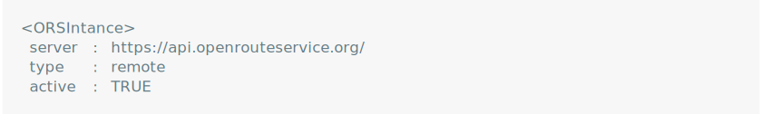
public$token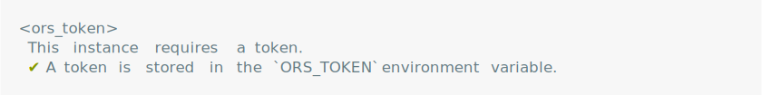
After doing this, all functions should be ready to use. Keep in mind though, that the public API comes with a few caveats:
- It is restricted at a rate limit of 40 requests per minute and 2000
requests per day.
rorsautomatically throttles requests to the public API such that queries will inevitably be slow for larger analyses. - It is a remote service that handles potentially sensitive address data. If data privacy is a concern, online services are usually not an option.
- It runs on a relatively strict configuration that severely limits the amount of data or ways to process the data. For example, requests to the isochrone endpoint are only allowed to contain a maximum of five locations:
ors_accessibility(pharma)
Therefore, if you plan on working with larger datasets, if you are
limited by server-side restrictions of the public API, or if you’re
handling sensitive data, it is strongly suggested that you set up a
local instance. This vignette will cover the usage of
ors_instance and family to construct and start a customized
ORS instance using R.
Setting up the service backend
In order to set up the ORS backend locally, we need three things:
- Docker
- An OpenStreetMap extract of the desired region
- A compose file telling Docker how to set up ORS
Of these, only Docker needs to be installed beforehand.
ors_instance can verify the installation and start Docker,
but it cannot assist in the installation process. You can get Docker
from here. Local ORS
instances use Docker containers to host the service endpoints on a local
server.
OpenStreetMap (OSM) extracts are regional data files from the OSM
project. It contains spatial information relevant for routing such as
streets, buildings and natural features. OSM extracts are distributed by
providers such as Geofabrik
or bbbike. rors
wraps the osmextract package to match, download, and
process extract files.
Finally, a compose file is a file that instructs Docker how to create
a container. The ors_instance function helps adjust this
file, e.g. to change allocated memory or ports.
You can initialize a local ORS instance by passing a directory to
ors_instance. The function then creates a sub-directory
reserved for ORS and downloads a compose file from the official ORS Github
repository. It then proceeds to “jumpstart” ORS, i.e. it starts a
default instance with default configurations and OSM data from
Heidelberg, Germany. This is probably not what you want, but worry not,
because you can make changes to this setup afterwards. Jumpstarting is
deemed good practice by the ORS developer team and simplifies the rest
of the setup.
ors <- ors_instance(dir = ".", version = "7c77ae5", prompts = FALSE)
Immediately after, we can take down the service to make changes to the ORS setup:
ors$down()
The resulting ors_instance object is stored in a cache
environment for the entire R session. All API functions automatically
detect the currently mounted instance.
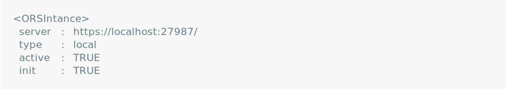
The instance object already shows some important information when printed. We are dealing with a local instance on a localhost. The instance is “active” in that it is currently mounted to the session and it is “init” in that it was already built for the first time.
ors is an R6 object and provides multiple methods to set
up a custom ORS instance. These methods can be divided into four
categories:
- Extract: Methods and fields to interact with OSM extracts
- Config: Methods and fields to interact with the configuration
- Settings: Methods and fields to interact with the compose file
- Docker: Methods and fields to interact with Docker
Changing the extract
If we wanted to learn more about the currently selected OSM extract, we can run:
ors$extract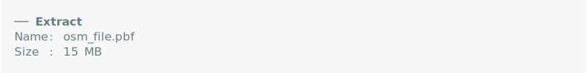
As you can see, we are currently running the default OSM file. If we wanted to get a new extract, we can run:
ors$set_extract("Rutland", provider = "geofabrik")This code runs osmextract::oe_match and
osmextract::oe_download to download an extract of the
British county Rutland. The extract is automatically added to the
compose file, so you don’t need to do anything else.
Changing the configuration
ORS creates a ors-config.yml file inside the ORS
directory that holds the configuration for the service. If you have ever
used ORS before, chances are you have encountered errors that told you
about server-side limits. The config file is the place where these
limits are defined and where you can change them for your own setup.
The configuration especially includes the active routing profiles,
profile-specific options and endpoint-specific options. Routing profiles
are the transport modes used to do the routing with. The default is
driving-car, but there are several other profiles you can
choose from (refer to the API
playground).
We can learn more about the currently active routing profiles:
ors$config
As you can see, there is currently only one active profile:
driving-car. To add more profiles, we can use the
$add_profiles method. The method accepts either character
values or objects of class ors_profile - or a combination
of both. For quickly adding a new profile, you can simply refer to it by
name.
ors$add_profiles("walking", ors_profile("hiking"))
However, each routing profile comes with its own set of
configurations. To have a better control over the configurations in each
profile, we can create ors_profile objects. The following
code creates a walking profile with the same defaults as above, but
without taking into account elevation in its routing computations.
ors_profile("walking", elevation = FALSE)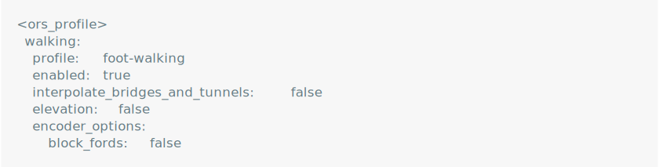
To remove a profile, you can refer to it by name:
ors$rm_profiles("hiking")
Besides routing profiles, we can also change the configuration of
entire endpoints. Endpoints include directions,
isochrones and matrix. Each endpoint comes
with its own limitations. For example, by default we can only create
isochrones for 2 locations. To increase this limit, we can run:
ors$set_endpoints(isochrone = list(maximum_locations = 100))
A full list of endpoint defaults set by ORS can be found in the endpoint reference. A full list of profiles and their specific configuration defaults can be found in the profile reference.
Changing the compose file
The final step before starting the setup is to check the container
settings aka the docker-compose.yml file. You can check the
current status of the compose file by printing:
ors$compose
By default, ORS uses 1 GB of initial memory and 2 GB of maximum
memory. This means that Docker starts allocating 1 GB of memory, but is
only allowed to allocate a maximum of 2 GB. You can adjust these
defaults to your needs using $set_ram. Usually, ORS
requires about 2.5 times the size of the extract file for each routing
profile as memory. You can either set the memory manually or let
$set_ram make an educated guess:
# Not passing anything tells `$set_ram` to freestyle
ors$set_ram()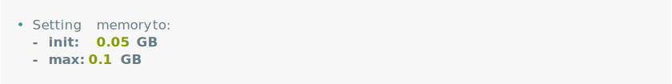
# Alternatively, pass values directly (as GB)
ors$set_ram(init = 0.1, max = 0.2)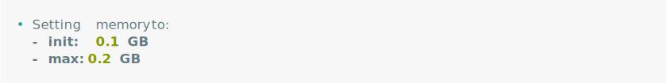
ors$compose$memory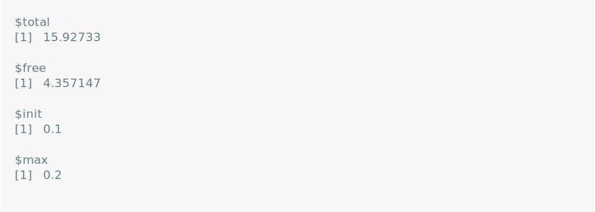
Similarly, not passing anything to other compose methods, makes them
freestyle. $set_name() creates a random container name and
$set_port() assigns a random port.
ors$set_name()
ors$compose$name
ors$set_port()
ors$compose$ports
Docker
The final step of the ORS setup is to start the Docker container and, ultimately, the service. The Docker container can be controlled through a purpose-tailored high-level Docker interface that understands the following commands:
- Build and start a container (
$up()/docker-compose up -d) - Take a container down (
$down()/docker-compose down) - Start a container (
$start()/docker-compose start) - Stop a container (
$stop()/docker-compose stop) - Show logs (
$show_logs()/docker logs)
The service can be started using the $up() method:
ors$up()
By default, $up() blocks the console until the setup is
done and gives out a visual and audible notification upon completion. If
the setup fails, $up() immediately invokes an informative
error. This is useful for short to moderately long setup times. However,
especially for longer setups, this can be obtrusive. By passing
wait = FALSE, the entire setup happens in a background
process and you can keep using the console. There are two tools that
enable you to monitor the setup progress nonetheless:
-
$show_logs(): Prints the ORS logs to the console. Should the setup fail, this is the first place to look for errors. In fact,$up(wait = TRUE)also uses Docker logs to determine errors in the setup. -
$is_ready(): Shows whether the setup is done and ORS is ready to use. It accesses thehealthendpoint to determine whether the setup has completed without any errors.$is_ready()is a simple wrapper aroundors_ready()which polls the currently mounted ORS instance.
When ors_ready() returns TRUE, you are
officially ready to use the rest of the package functions!
Manual changes
The methods of an ORS instance object cover only some settings and configurations. Many functionalities were deliberately left out to keep the number of methods neat and tidy. If you are missing some important feature, feel free to open a Github issue.
Yet, you can always make manual changes yourself. The methods
introduced above are merely convenience wrappers that take care of some
tedious tasks. Parsed versions of ors-config.yml and
docker-compose.yml are readily accessible in the instance
object:
ors$config$parsed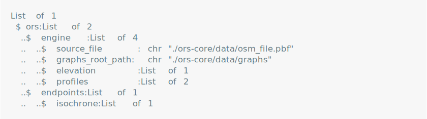
ors$compose$parsed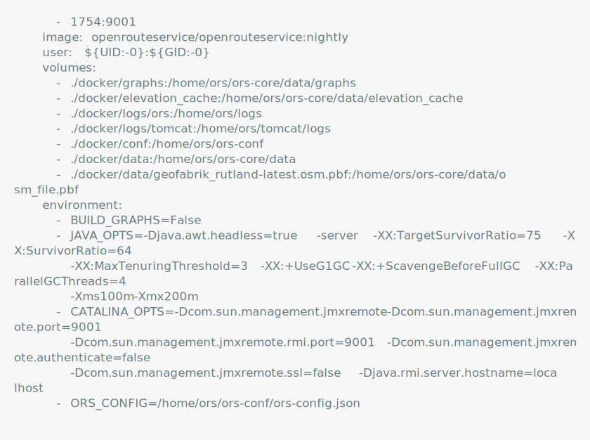
Both objects are lists, which can simply be modified:
ors$compose$parsed$services$`ors-app`$container_name <- "new-name-123"One caveat is that such simple assignments only change the state of
the object, but not the state of the actual files. To synchronize the
ORS file system, you have to $update() after making manual
changes:
ors$update()This command writes the current state of the parsed ORS files to disk. Conversely, if you make manual changes to one of the relevant ORS files, you can update the R instance object using:
ors$update("self")This command re-parses all ORS files. Again, it is advisable to make the majority of changes using the convenience wrappers as they automatically update and mount the instance object. Manually updating the instance is prone to errors which can be quite hard to spot and debug.
Other methods
ORS instance objects contain some other important functions that didn’t make it into this vignette. Among them are:
-
$is_built()/$is_running(): Check whether a container is built and running. These are the two steps before a service is ready and are useful to monitor a container before the service is ready. -
$is_mounted(): Checks whether an instance is currently mounted to the session. If not the case, simply invoke one of the methods (e.g.$update()) to mount it. -
$get_image()/$get_container()Return some useful diagnostics about the image and container. -
$get_status(): Returns configurations and attributes of the ORS service (given that the service is ready). -
$purge(): Purges an ORS instance, i.e. takes down containers, deletes the ORS directory and cleans the instance object. -
$rm_extract(): Removes one or several extracts from the ORS directory. -
$report(): Prints a situation report of the ORS instance object.
Fin
To finalize an ORS instance, you can run ors$purge().
Purging an instance takes down any running container, (optionally)
deletes the image, unlinks the created sub-directory and cleans up the
ORS object. ORS instances also register a finalizer that automatically
purges the ORS instance just before garbage collection when it is
unbinded using rm(ors).
ors$purge()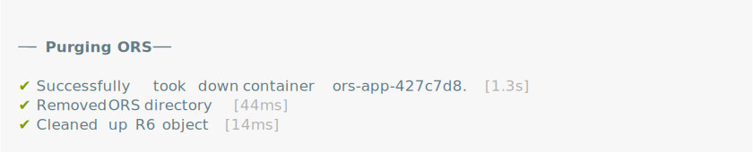